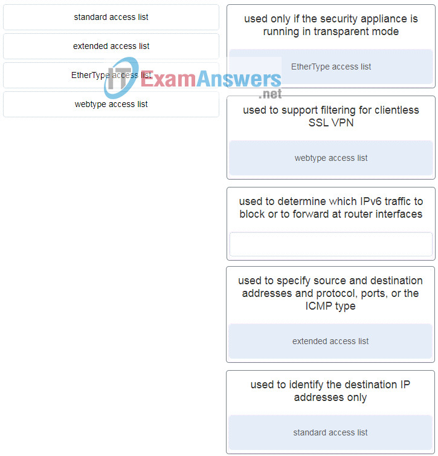
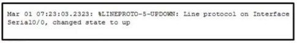
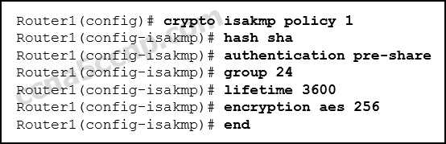
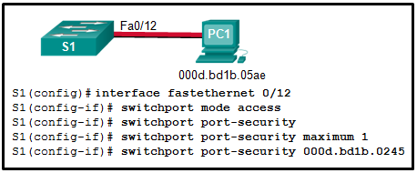
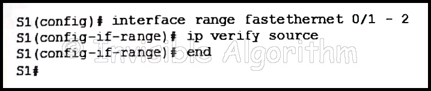
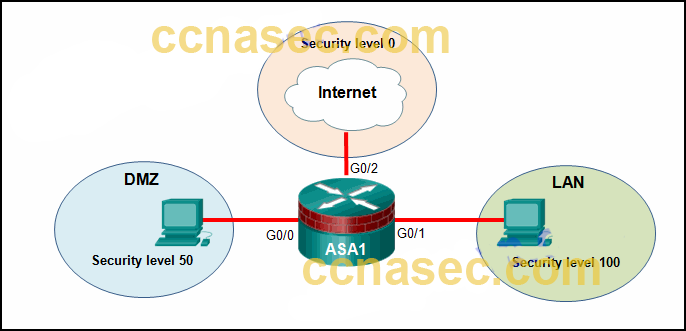
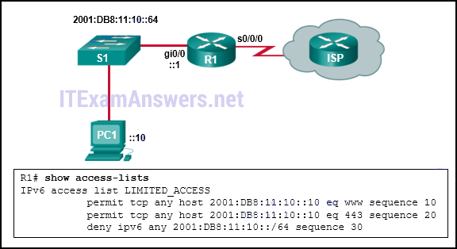
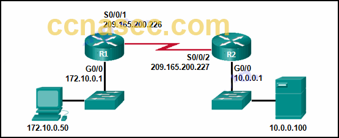

Network Security ( Version 1) – Network Security 1.0 Final Exam Answers
1. Match the type of ASA ACLs to the description. (Not all options are used.)

2. Which statement describes a difference between the Cisco ASA IOS CLI feature and the router IOS CLI feature?
- ASA uses the ? command whereas a router uses the help command to receive help on a brief description and the syntax of a command.
- To use a show command in a general configuration mode, ASA can use the command directly whereas a router will need to enter the do command before issuing the show command.
- To complete a partially typed command, ASA uses the Ctrl+Tab key combination whereas a router uses the Tab key.
- To indicate the CLI EXEC mode, ASA uses the % symbol whereas a router uses the # symbol.
3. Refer to the exhibit. A network administrator is configuring AAA implementation on an ASA device. What does the option link3 indicate? - Final Exam Answers Full 2")
- the network name where the AAA server resides
- the specific AAA server name
- the sequence of servers in the AAA server group
- the interface name
4. What provides both secure segmentation and threat defense in a Secure Data Center solution?
- Cisco Security Manager software
- AAA server
- Adaptive Security Appliance
- intrusion prevention system
5. What are the three core components of the Cisco Secure Data Center solution? (Choose three.)
- mesh network
- secure segmentation
- visibility
- threat defense
- servers
- infrastructure
6. What are three characteristics of ASA transparent mode? (Choose three.)
- This mode does not support VPNs, QoS, or DHCP Relay.
- It is the traditional firewall deployment mode.
- This mode is referred to as a “bump in the wire.”
- NAT can be implemented between connected networks.
- In this mode the ASA is invisible to an attacker.
- The interfaces of the ASA separate Layer 3 networks and require IP addresses in different subnets.
7. What is needed to allow specific traffic that is sourced on the outside network of an ASA firewall to reach an internal network?
- ACL
- NAT
- dynamic routing protocols
- outside security zone level 0
8. What will be the result of failed login attempts if the following command is entered into a router?
login block-for 150 attempts 4 within 90
- All login attempts will be blocked for 150 seconds if there are 4 failed attempts within 90 seconds.
- All login attempts will be blocked for 90 seconds if there are 4 failed attempts within 150 seconds.
- All login attempts will be blocked for 1.5 hours if there are 4 failed attempts within 150 seconds.
- All login attempts will be blocked for 4 hours if there are 90 failed attempts within 150 seconds.
9. Which two tasks are associated with router hardening? (Choose two.)
- placing the router in a secure room
- disabling unused ports and interfaces
- installing the maximum amount of memory possible
- securing administrative access
- using uninterruptible power supplies
10. Which threat protection capability is provided by Cisco ESA?
- web filtering
- cloud access security
- spam protection
- Layer 4 traffic monitoring
11. What are two security measures used to protect endpoints in the borderless network? (Choose two.)
- denylisting
- Snort IPS
- DLP
- DMZ
- rootkit
12. Which three types of traffic are allowed when the authentication port-control auto command has been issued and the client has not yet been authenticated? (Choose three.)
- CDP
- 802.1Q
- IPsec
- TACACS+
- STP
- EAPOL
13. Which statement describes a characteristic of the IKE protocol?
- It uses UDP port 500 to exchange IKE information between the security gateways.
- IKE Phase 1 can be implemented in three different modes: main, aggressive, or quick.
- It allows for the transmission of keys directly across a network.
- The purpose of IKE Phase 2 is to negotiate a security association between two IKE peers.
14. Which action do IPsec peers take during the IKE Phase 2 exchange?
- exchange of DH keys
- negotiation of IPsec policy
- negotiation of IKE policy sets
- verification of peer identity
15. What are two hashing algorithms used with IPsec AH to guarantee authenticity? (Choose two.)
- SHA
- RSA
- DH
- MD5
- AES
16. Which command raises the privilege level of the ping command to 7?
- user exec ping level 7
- authorization exec ping level 7
- accounting exec level 7 ping
- privilege exec level 7 ping
17. What is a characteristic of a role-based CLI view of router configuration?
- A CLI view has a command hierarchy, with higher and lower views.
- When a superview is deleted, the associated CLI views are deleted.
- A single CLI view can be shared within multiple superviews.
- Only a superview user can configure a new view and add or remove commands from the existing views.
18. What is a limitation to using OOB management on a large enterprise network?
- Production traffic shares the network with management traffic.
- Terminal servers can have direct console connections to user devices needing management.
- OOB management requires the creation of VPNs.
- All devices appear to be attached to a single management network.
19. Refer to the exhibit. A corporate network is using NTP to synchronize the time across devices. What can be determined from the displayed output? - Final Exam Answers Full 3")
- Router03 is a stratum 2 device that can provide NTP service to other devices in the network.
- The time on Router03 may not be reliable because it is offset by more than 7 seconds to the time server.
- The interface on Router03 that connects to the time sever has the IPv4 address 209.165.200.225.
- Router03 time is synchronized to a stratum 2 time server.
20. Refer to the exhibit. Which two conclusions can be drawn from the syslog message that was generated by the router? (Choose two.)

- This message resulted from an unusual error requiring reconfiguration of the interface.
- This message indicates that service timestamps have been configured.
- This message indicates that the interface changed state five times.
- This message is a level 5 notification message.
- This message indicates that the interface should be replaced.
21. Which two types of hackers are typically classified as grey hat hackers? (Choose two.)
- hacktivists
- cyber criminals
- vulnerability brokers
- script kiddies
- state-sponsored hackers
22. When describing malware, what is a difference between a virus and a worm?
 - Final Exam Answers Full 5")
- A virus focuses on gaining privileged access to a device, whereas a worm does not.
- A virus replicates itself by attaching to another file, whereas a worm can replicate itself independently.
- A virus can be used to launch a DoS attack (but not a DDoS), but a worm can be used to launch both DoS and DDoS attacks.
- A virus can be used to deliver advertisements without user consent, whereas a worm cannot.
23. Which type of packet is unable to be filtered by an outbound ACL?
- multicast packet
- ICMP packet
- broadcast packet
- router-generated packet
24. Consider the access list command applied outbound on a router serial interface.
access-list 100 deny icmp 192.168.10.0 0.0.0.255 any echo reply
What is the effect of applying this access list command?
- The only traffic denied is echo-replies sourced from the 192.168.10.0/24 network. All other traffic is allowed.
- The only traffic denied is ICMP-based traffic. All other traffic is allowed.
- No traffic will be allowed outbound on the serial interface.
- Users on the 192.168.10.0/24 network are not allowed to transmit traffic to any other destination.
25. Which command is used to activate an IPv6 ACL named ENG_ACL on an interface so that the router filters traffic prior to accessing the routing table?
- ipv6 access-class ENG_ACL in
- ipv6 traffic-filter ENG_ACL out
- ipv6 traffic-filter ENG_ACL in
- ipv6 access-class ENG_ACL out
26. What technology has a function of using trusted third-party protocols to issue credentials that are accepted as an authoritative identity?
- digital signatures
- hashing algorithms
- PKI certificates
- symmetric keys
27. What are two methods to maintain certificate revocation status? (Choose two.)
- subordinate CA
- OCSP
- DNS
- LDAP
- CRL
28. Which protocol is an IETF standard that defines the PKI digital certificate format?
- SSL/TLS
- X.500
- LDAP
- X.509
29. A network administrator is configuring DAI on a switch. Which command should be used on the uplink interface that connects to a router?
- ip arp inspection trust
- ip dhcp snooping
- ip arp inspection vlan
- spanning-tree portfast
30. What is the best way to prevent a VLAN hopping attack?
- Disable trunk negotiation for trunk ports and statically set nontrunk ports as access ports.
- Disable STP on all nontrunk ports.
- Use VLAN 1 as the native VLAN on trunk ports.
- Use ISL encapsulation on all trunk links.
31. What would be the primary reason an attacker would launch a MAC address overflow attack?
- so that the switch stops forwarding traffic
- so that legitimate hosts cannot obtain a MAC address
- so that the attacker can see frames that are destined for other hosts
- so that the attacker can execute arbitrary code on the switch
32. What is the main difference between the implementation of IDS and IPS devices?
- An IDS can negatively impact the packet flow, whereas an IPS can not.
- An IDS needs to be deployed together with a firewall device, whereas an IPS can replace a firewall.
- An IDS would allow malicious traffic to pass before it is addressed, whereas an IPS stops it immediately.
- An IDS uses signature-based technology to detect malicious packets, whereas an IPS uses profile-based technology.
33. Which attack is defined as an attempt to exploit software vulnerabilities that are unknown or undisclosed by the vendor?
- zero-day
- Trojan horse
- brute-force
- man-in-the-middle
34. Match the network monitoring technology with the description. - Final Exam Answers Full 6")
35. What are the three signature levels provided by Snort IPS on the 4000 Series ISR? (Choose three.)
- security
- drop
- reject
- connectivity
- inspect
- balanced
36. What are three attributes of IPS signatures? (Choose three.)
- action
- length
- trigger
- type
- depth
- function
37. Match each IPS signature trigger category with the description. - Final Exam Answers Full 7")
Other case: - Final Exam Answers Full 8")
- pattern-based detection: simplest triggering mechanism which searches for a specific and pre-defined atomic or composite pattern
- anomaly-based detection: involves first defining a profile of what is considered normal network or host activity
- honey pot-based detection: uses a decoy server to divert attacks away from production devices
38. Which two features are included by both TACACS+ and RADIUS protocols? (Choose two.)
- SIP support
- password encryption
- 802.1X support
- separate authentication and authorization processes
- utilization of transport layer protocols
39. What function is provided by the RADIUS protocol?
- RADIUS provides encryption of the complete packet during transfer.
- RADIUS provides separate AAA services.
- RADIUS provides separate ports for authorization and accounting.
- RADIUS provides secure communication using TCP port 49.
40. What are three characteristics of the RADIUS protocol? (Choose three.)
- utilizes TCP port 49
- uses UDP ports for authentication and accounting
- supports 802.1X and SIP
- separates the authentication and authorization processes
- encrypts the entire body of the packet
- is an open RFC standard AAA protocol
41. Which zone-based policy firewall zone is system-defined and applies to traffic destined for the router or originating from the router?
- local zone
- inside zone
- self zone
- system zone
- outside zone
42. What are two benefits of using a ZPF rather than a Classic Firewall? (Choose two.)
- ZPF allows interfaces to be placed into zones for IP inspection.
- The ZPF is not dependent on ACLs.
- Multiple inspection actions are used with ZPF.
- ZPF policies are easy to read and troubleshoot.
- With ZPF, the router will allow packets unless they are explicitly blocked.
In addition, an interface cannot be simultaneously configured as a security zone member and for IP inspection.
43. Place the steps for configuring zone-based policy (ZPF) firewalls in order from first to last. (Not all options are used.) - Final Exam Answers Full 9")
44. How does a firewall handle traffic when it is originating from the private network and traveling to the DMZ network?
- The traffic is selectively denied based on service requirements.
- The traffic is usually permitted with little or no restrictions.
- The traffic is selectively permitted and inspected.
- The traffic is usually blocked.
45. Which two protocols generate connection information within a state table and are supported for stateful filtering? (Choose two.)
- ICMP
- UDP
- DHCP
- TCP
- HTTP
46. Which type of firewall is supported by most routers and is the easiest to implement?
- next generation firewall
- stateless firewall
- stateful firewall
- proxy firewall
47. What network testing tool would an administrator use to assess and validate system configurations against security policies and compliance standards?
- Tripwire
- L0phtcrack
- Nessus
- Metasploit
48. What type of network security test can detect and report changes made to network systems?
- vulnerability scanning
- network scanning
- integrity checking
- penetration testing
49. What network security testing tool has the ability to provide details on the source of suspicious network activity?
- SIEM
- SuperScan
- Zenmap
- Tripwire
50 How do modern cryptographers defend against brute-force attacks?
- Use statistical analysis to eliminate the most common encryption keys.
- Use a keyspace large enough that it takes too much money and too much time to conduct a successful attack.
- Use an algorithm that requires the attacker to have both ciphertext and plaintext to conduct a successful attack.
- Use frequency analysis to ensure that the most popular letters used in the language are not used in the cipher message.
51. How does a Caesar cipher work on a message?
- Letters of the message are replaced by another letter that is a set number of places away in the alphabet.
- Letters of the message are rearranged randomly.
- Letters of the message are rearranged based on a predetermined pattern.
- Words of the message are substituted based on a predetermined pattern.
52. What is the main factor that ensures the security of encryption of modern algorithms?
- complexity of the hashing algorithm
- the use of 3DES over AES
- secrecy of the keys
- secrecy of the algorithm
53 What is the next step in the establishment of an IPsec VPN after IKE Phase 1 is complete?
- negotiation of the ISAKMP policy
- negotiation of the IPsec SA policy
- detection of interesting traffic
- authentication of peers
54. Refer to the exhibit. What algorithm will be used for providing confidentiality?

- RSA
- Diffie-Hellman
- DES
- AES
55. After issuing a show run command, an analyst notices the following command:
crypto ipsec transform-set MYSET esp-aes 256 esp-md5-hmac
What is the purpose of this command?
- It establishes the set of encryption and hashing algorithms used to secure the data sent through an IPsec tunnel.
- It defines the default ISAKMP policy list used to establish the IKE Phase 1 tunnel.
- It establishes the criteria to force the IKE Phase 1 negotiations to begin.
- It indicates that IKE will be used to establish the IPsec tunnel for protecting the traffic.
56. Which algorithm can ensure data integrity?
- RSA
- AES
- MD5
- PKI
57. A company implements a security policy that ensures that a file sent from the headquarters office to the branch office can only be opened with a predetermined code. This code is changed every day. Which two algorithms can be used to achieve this task? (Choose two.)
- HMAC
- MD5
- 3DES
- SHA-1
- AES
58. A network technician has been asked to design a virtual private network between two branch routers. Which type of cryptographic key should be used in this scenario?
- hash key
- symmetric key
- asymmetric key
- digital signature
59. Which two options can limit the information discovered from port scanning? (Choose two.)
- intrusion prevention system
- firewall
- authentication
- passwords
- encryption
60. An administrator discovers that a user is accessing a newly established website that may be detrimental to company security. What action should the administrator take first in terms of the security policy?
- Ask the user to stop immediately and inform the user that this constitutes grounds for dismissal.
- Create a firewall rule blocking the respective website.
- Revise the AUP immediately and get all users to sign the updated AUP.
- Immediately suspend the network privileges of the user.
61. If AAA is already enabled, which three CLI steps are required to configure a router with a specific view? (Choose three.)
- Create a superview using the parser view view-name command.
- Associate the view with the root view.
- Assign users who can use the view.
- Create a view using the parser view view-name command.
- Assign a secret password to the view.
- Assign commands to the view.
62. Refer to the exhibit. A network administrator configures a named ACL on the router. Why is there no output displayed when the show command is issued?
 - Final Exam Answers Full 11")
- The ACL is not activated.
- The ACL name is case sensitive.
- The ACL has not been applied to an interface.
- No packets have matched the ACL statements yet.
63. ACLs are used primarily to filter traffic. What are two additional uses of ACLs? (Choose two.):
- specifying internal hosts for NAT
- identifying traffic for QoS
- specifying source addresses for authentication
- reorganizing traffic into VLANs
- filtering VTP packets
64. What two features are added in SNMPv3 to address the weaknesses of previous versions of SNMP? (Choose two.)
- authentication
- authorization with community string priority
- bulk MIB objects retrieval
- ACL management filtering
- encryption
65. What network testing tool is used for password auditing and recovery?
- Nessus
- Metasploit
- L0phtcrack
- SuperScan
66. Which type of firewall makes use of a server to connect to destination devices on behalf of clients?
- packet filtering firewall
- proxy firewall
- stateless firewall
- stateful firewall
67. Refer to the exhibit. What will be displayed in the output of the show running-config object command after the exhibited configuration commands are entered on an ASA 5506-X? - Final Exam Answers Full 12")
- host 192.168.1.4
- range 192.168.1.10 192.168.1.20
- host 192.168.1.3, host 192.168.1.4, and range 192.168.1.10 192.168.1.20
- host 192.168.1.3
- host 192.168.1.3 and host 192.168.1.4
- host 192.168.1.4 and range 192.168.1.10 192.168.1.20
68. Refer to the exhibit. According to the command output, which three statements are true about the DHCP options entered on the ASA? (Choose three.) - Final Exam Answers Full 13")
- The dhcpd address [ start-of-pool ]-[ end-of-pool ] inside command was issued to enable the DHCP server.
- The dhcpd address [ start-of-pool ]-[ end-of-pool ] inside command was issued to enable the DHCP client.
- The dhcpd enable inside command was issued to enable the DHCP server.
- The dhcpd auto-config outside command was issued to enable the DHCP client.
- The dhcpd auto-config outside command was issued to enable the DHCP server.
- The dhcpd enable inside command was issued to enable the DHCP client.
69. Which two statements describe the characteristics of symmetric algorithms? (Choose two.)
- They are commonly used with VPN traffic.
- They use a pair of a public key and a private key.
- They are commonly implemented in the SSL and SSH protocols.
- They provide confidentiality, integrity, and availability.
- They are referred to as a pre-shared key or secret key.
70. A web server administrator is configuring access settings to require users to authenticate first before accessing certain web pages. Which requirement of information security is addressed through the configuration?
- availability
- integrity
- scalability
- confidentiality
71. The use of 3DES within the IPsec framework is an example of which of the five IPsec building blocks?
- authentication
- nonrepudiation
- integrity
- Diffie-Hellman
- confidentiality
72. What function is provided by Snort as part of the Security Onion?
- to generate network intrusion alerts by the use of rules and signatures
- to normalize logs from various NSM data logs so they can be represented, stored, and accessed through a common schema
- to display full-packet captures for analysis
- to view pcap transcripts generated by intrusion detection tools
73. What are two drawbacks to using HIPS? (Choose two.)
- With HIPS, the success or failure of an attack cannot be readily determined.
- With HIPS, the network administrator must verify support for all the different operating systems used in the network.
- HIPS has difficulty constructing an accurate network picture or coordinating events that occur across the entire network.
- If the network traffic stream is encrypted, HIPS is unable to access unencrypted forms of the traffic.
- HIPS installations are vulnerable to fragmentation attacks or variable TTL attacks.
74. In an AAA-enabled network, a user issues the configure terminal command from the privileged executive mode of operation. What AAA function is at work if this command is rejected?
- authorization
- authentication
- auditing
- accounting
75. A company has a file server that shares a folder named Public. The network security policy specifies that the Public folder is assigned Read-Only rights to anyone who can log into the server while the Edit rights are assigned only to the network admin group. Which component is addressed in the AAA network service framework?
- automation
- accounting
- authentication
- authorization
76. What is a characteristic of a DMZ zone?
- Traffic originating from the inside network going to the DMZ network is not permitted.
- Traffic originating from the outside network going to the DMZ network is selectively permitted.
- Traffic originating from the DMZ network going to the inside network is permitted.
- Traffic originating from the inside network going to the DMZ network is selectively permitted.
77. Which measure can a security analyst take to perform effective security monitoring against network traffic encrypted by SSL technology?
- Use a Syslog server to capture network traffic.
- Deploy a Cisco SSL Appliance.
- Require remote access connections through IPsec VPN.
- Deploy a Cisco ASA.
78. Refer to the exhibit. Port security has been configured on the Fa 0/12 interface of switch S1. What action will occur when PC1 is attached to switch S1 with the applied configuration?

- Frames from PC1 will be forwarded since the switchport port-security violation command is missing.
- Frames from PC1 will be forwarded to its destination, and a log entry will be created.
- Frames from PC1 will be forwarded to its destination, but a log entry will not be created.
- Frames from PC1 will cause the interface to shut down immediately, and a log entry will be made.
- Frames from PC1 will be dropped, and there will be no log of the violation.
- Frames from PC1 will be dropped, and a log message will be created.
79. What security countermeasure is effective for preventing CAM table overflow attacks?
- DHCP snooping
- Dynamic ARP Inspection
- IP source guard
- port security
80. What are two examples of DoS attacks? (Choose two.)
- port scanning
- SQL injection
- ping of death
- phishing
- buffer overflow
81. Which method is used to identify interesting traffic needed to create an IKE phase 1 tunnel?
- transform sets
- a permit access list entry
- hashing algorithms
- a security association
82. When the CLI is used to configure an ISR for a site-to-site VPN connection, which two items must be specified to enable a crypto map policy? (Choose two.)
- the hash
- the peer
- encryption
- the ISAKMP policy
- a valid access list
- IP addresses on all active interfaces
- the IKE Phase 1 policy
83. How does a firewall handle traffic when it is originating from the public network and traveling to the DMZ network?
- Traffic that is originating from the public network is inspected and selectively permitted when traveling to the DMZ network.
- Traffic that is originating from the public network is usually permitted with little or no restriction when traveling to the DMZ network.
- Traffic that is originating from the public network is usually forwarded without inspection when traveling to the DMZ network.
- Traffic that is originating from the public network is usually blocked when traveling to the DMZ network.
84. A client connects to a Web server. Which component of this HTTP connection is not examined by a stateful firewall?
- the source IP address of the client traffic
- the destination port number of the client traffic
- the actual contents of the HTTP connection
- the source port number of the client traffic
85. Which network monitoring technology uses VLANs to monitor traffic on remote switches?
- IPS
- IDS
- TAP
- RSPAN
86. Which rule action will cause Snort IPS to block and log a packet?
- log
- drop
- alert
- Sdrop
87. What is typically used to create a security trap in the data center facility?
- IDs, biometrics, and two access doors
- high resolution monitors
- redundant authentication servers
- a server without all security patches applied
88. A company is concerned with leaked and stolen corporate data on hard copies. Which data loss mitigation technique could help with this situation?
- strong PC security settings
- strong passwords
- shredding
- encryption
89. Upon completion of a network security course, a student decides to pursue a career in cryptanalysis. What job would the student be doing as a cryptanalyst?
- cracking code without access to the shared secret key
- creating hashing codes to authenticate data
- making and breaking secret codes
- creating transposition and substitution ciphers
90. What command is used on a switch to set the port access entity type so the interface acts only as an authenticator and will not respond to any messages meant for a supplicant?
- dot1x pae authenticator
- authentication port-control auto
- aaa authentication dot1x default group radius
- dot1x system-auth-control
91. What are two disadvantages of using an IDS? (Choose two.)
- The IDS does not stop malicious traffic.
- The IDS works offline using copies of network traffic.
- The IDS has no impact on traffic.
- The IDS analyzes actual forwarded packets.
- The IDS requires other devices to respond to attacks.
92. Refer to the exhibit. The ip verify source command is applied on untrusted interfaces. Which type of attack is mitigated by using this configuration?

- DHCP spoofing
- DHCP starvation
- STP manipulation
- MAC and IP address spoofing
93. What ports can receive forwarded traffic from an isolated port that is part of a PVLAN?
- other isolated ports and community ports
- only promiscuous ports
- all other ports within the same community
- only isolated ports
94. A user complains about being locked out of a device after too many unsuccessful AAA login attempts. What could be used by the network administrator to provide a secure authentication access method without locking a user out of a device?
- Use the login delay command for authentication attempts.
- Use the login local command for authenticating user access.
- Use the aaa local authentication attempts max-fail global configuration mode command with a higher number of acceptable failures.
- Use the none keyword when configuring the authentication method list.
95. What are two drawbacks in assigning user privilege levels on a Cisco router? (Choose two.)
- Only a root user can add or remove commands.
- Privilege levels must be set to permit access control to specific device interfaces, ports, or slots.
- Assigning a command with multiple keywords allows access to all commands using those keywords.
- Commands from a lower level are always executable at a higher level.
- AAA must be enabled.
96. Refer to the exhibit. Which conclusion can be made from the show crypto map command output that is shown on R1? - Final Exam Answers Full 16")
- The crypto map has not yet been applied to an interface.
- The current peer IP address should be 172.30.2.1.
- There is a mismatch between the transform sets.
- The tunnel configuration was established and can be tested with extended pings.
97. What are two reasons to enable OSPF routing protocol authentication on a network? (Choose two.)
- to prevent data traffic from being redirected and then discarded
- to ensure faster network convergence
- to provide data security through encryption
- to prevent redirection of data traffic to an insecure link
- to ensure more efficient routing
98. Which three functions are provided by the syslog logging service? (Choose three.)
- gathering logging information
- authenticating and encrypting data sent over the network
- retaining captured messages on the router when a router is rebooted
- specifying where captured information is stored
- distinguishing between information to be captured and information to be ignored
- setting the size of the logging buffer
99. What two ICMPv6 message types must be permitted through IPv6 access control lists to allow resolution of Layer 3 addresses to Layer 2 MAC addresses? (Choose two.)
- neighbor solicitations
- echo requests
- neighbor advertisements
- echo replies
- router solicitations
- router advertisements
100. Which three services are provided through digital signatures? (Choose three.)
- accounting
- authenticity
- compression
- nonrepudiation
- integrity
- encryption
101. A technician is to document the current configurations of all network devices in a college, including those in off-site buildings. Which protocol would be best to use to securely access the network devices?
- FTP
- HTTP
- SSH
- Telnet
102. An administrator is trying to develop a BYOD security policy for employees that are bringing a wide range of devices to connect to the company network. Which three objectives must the BYOD security policy address? (Choose three.)
- All devices must be insured against liability if used to compromise the corporate network.
- All devices must have open authentication with the corporate network.
- Rights and activities permitted on the corporate network must be defined.
- Safeguards must be put in place for any personal device being compromised.
- The level of access of employees when connecting to the corporate network must be defined.
- All devices should be allowed to attach to the corporate network flawlessly.
103. What is the function of the pass action on a Cisco IOS Zone-Based Policy Firewall?
- logging of rejected or dropped packets
- inspecting traffic between zones for traffic control
- tracking the state of connections between zones
- forwarding traffic from one zone to another
104. Refer to the exhibit. Based on the security levels of the interfaces on ASA1, what traffic will be allowed on the interfaces?

- Traffic from the Internet and DMZ can access the LAN.
- Traffic from the Internet and LAN can access the DMZ.
- Traffic from the Internet can access both the DMZ and the LAN.
- Traffic from the LAN and DMZ can access the Internet.
105. What network testing tool can be used to identify network layer protocols running on a host?
- SIEM
- Nmap
- L0phtcrack
- Tripwire
106. In the implementation of security on multiple devices, how do ASA ACLs differ from Cisco IOS ACLs?
- Cisco IOS routers utilize both named and numbered ACLs and Cisco ASA devices utilize only numbered ACLs.
- Cisco IOS ACLs are configured with a wildcard mask and Cisco ASA ACLs are configured with a subnet mask.
- Cisco IOS ACLs are processed sequentially from the top down and Cisco ASA ACLs are not processed sequentially.
- Cisco IOS ACLs utilize an implicit deny all and Cisco ASA ACLs end with an implicit permit all.
107. Which statement describes an important characteristic of a site-to-site VPN?
- It must be statically set up.
- It is ideally suited for use by mobile workers.
- It requires using a VPN client on the host PC.
- After the initial connection is established, it can dynamically change connection information.
- It is commonly implemented over dialup and cable modem networks.
108. Which two options are security best practices that help mitigate BYOD risks? (Choose two.)
- Use paint that reflects wireless signals and glass that prevents the signals from going outside the building.
- Keep the device OS and software updated.
- Only allow devices that have been approved by the corporate IT team.
- Only turn on Wi-Fi when using the wireless network.
- Decrease the wireless antenna gain level.
- Use wireless MAC address filtering.
109. Refer to the exhibit. A network administrator configures AAA authentication on R1. Which statement describes the effect of the keyword single-connection in the configuration? - Final Exam Answers Full 18")
- R1 will open a separate connection to the TACACS+ server for each user authentication session.
- The authentication performance is enhanced by keeping the connection to the TACACS+ server open.
- The TACACS+ server only accepts one successful try for a user to authenticate with it.
- R1 will open a separate connection to the TACACS server on a per source IP address basis for each authentication session.
110. A recently created ACL is not working as expected. The admin determined that the ACL had been applied inbound on the interface and that was the incorrect direction. How should the admin fix this issue?
- Delete the original ACL and create a new ACL, applying it outbound on the interface.
- Add an association of the ACL outbound on the same interface.
- Fix the ACE statements so that it works as desired inbound on the interface.
- Remove the inbound association of the ACL on the interface and reapply it outbound.
111. What characteristic of the Snort term-based subscriptions is true for both the community and the subscriber rule sets?
- Both have a 30-day delayed access to updated signatures.
- Both use Cisco Talos to provide coverage in advance of exploits.
- Both are fully supported by Cisco and include Cisco customer support.
- Both offer threat protection against security threats.
112. A security analyst is configuring Snort IPS. The analyst has just downloaded and installed the Snort OVA file. What is the next step?
- Verify Snort IPS.
- Configure Virtual Port Group interfaces.
- Enable IPS globally or on desired interfaces.
- Activate the virtual services.
113. The security policy in a company specifies that employee workstations can initiate HTTP and HTTPS connections to outside websites and the return traffic is allowed. However, connections initiated from outside hosts are not allowed. Which parameter can be used in extended ACLs to meet this requirement?
- dscp
- precedence
- eq
- established
114. A researcher is comparing the differences between a stateless firewall and a proxy firewall. Which two additional layers of the OSI model are inspected by a proxy firewall? (Choose two.)
- Layer 3
- Layer 4
- Layer 5
- Layer 6
- Layer 7
115. Refer to the exhibit. A network administrator is configuring a VPN between routers R1 and R2. Which commands would correctly configure a pre-shared key for the two routers? - Final Exam Answers Full 19")
R1(config)# username R2 password 5tayout!
R2(config)# username R1 password 5tayout!
R1(config)# crypto isakmp key 5tayout! address 64.100.0.2
R2(config)# crypto isakmp key 5tayout! address 64.100.0.1
R1(config)# crypto isakmp key 5tayout! hostname R1
R2(config)# crypto isakmp key 5tayout! hostname R2
R1(config-if)# ppp pap sent-username R1 password 5tayout!
R2(config-if)# ppp pap sent-username R2 password 5tayout!
116. Refer to the exhibit. Which statement is true about the effect of this Cisco IOS zone-based policy firewall configuration? - Final Exam Answers Full 20")
- The firewall will automatically drop all HTTP, HTTPS, and FTP traffic.
- The firewall will automatically allow HTTP, HTTPS, and FTP traffic from s0/0/0 to g0/0 and will track the connections. Tracking the connection allows only return traffic to be permitted through the firewall in the opposite direction.
- The firewall will automatically allow HTTP, HTTPS, and FTP traffic from s0/0/0 to g0/0, but will not track the state of connections. A corresponding policy must be applied to allow return traffic to be permitted through the firewall in the opposite direction.
- The firewall will automatically allow HTTP, HTTPS, and FTP traffic from g0/0 to s0/0/0 and will track the connections. Tracking the connection allows only
- return traffic to be permitted through the firewall in the opposite direction.
- The firewall will automatically allow HTTP, HTTPS, and FTP traffic from g0/0 to s0/0/0, but will not track the state of connections. A corresponding policy must be applied to allow return traffic to be permitted through the firewall in the opposite direction.
117. Which privilege level has the most access to the Cisco IOS?
- level 0
- level 15
- level 7
- level 16
- level 1
118. Refer to the exhibit. A network administrator has configured NAT on an ASA device. What type of NAT is used? - Final Exam Answers Full 21")
- inside NAT
- static NAT
- bidirectional NAT
- outside NAT
119. A network analyst is configuring a site-to-site IPsec VPN. The analyst has configured both the ISAKMP and IPsec policies. What is the next step?
- Configure the hash as SHA and the authentication as pre-shared.
- Apply the crypto map to the appropriate outbound interfaces.
- Issue the show crypto ipsec sa command to verify the tunnel.
- Verify that the security feature is enabled in the IOS.
120. When an inbound Internet-traffic ACL is being implemented, what should be included to prevent the spoofing of internal networks?
- ACEs to prevent traffic from private address spaces
- ACEs to prevent broadcast address traffic
- ACEs to prevent ICMP traffic
- ACEs to prevent HTTP traffic
- ACEs to prevent SNMP traffic
121. Match the security term to the appropriate description. (Not all options are used.)
 - Final Exam Answers Full 22")
122. Which two types of attacks are examples of reconnaissance attacks? (Choose two.)
- brute force
- port scan
- ping sweep
- man-in-the-middle
- SYN flood
123. Which Cisco solution helps prevent ARP spoofing and ARP poisoning attacks?
- Dynamic ARP Inspection
- IP Source Guard
- DHCP Snooping
- Port Security
124. When the Cisco NAC appliance evaluates an incoming connection from a remote device against the defined network policies, what feature is being used?
- posture assessment
- remediation of noncompliant systems
- authentication and authorization
- quarantining of noncompliant systems
125. Which two steps are required before SSH can be enabled on a Cisco router? (Choose two.)
- Give the router a host name and domain name.
- Create a banner that will be displayed to users when they connect.
- Generate a set of secret keys to be used for encryption and decryption.
- Set up an authentication server to handle incoming connection requests.
- Enable SSH on the physical interfaces where the incoming connection requests will be received.
126. The network administrator for an e-commerce website requires a service that prevents customers from claiming that legitimate orders are fake. What service provides this type of guarantee?
- confidentiality
- authentication
- integrity
- nonrepudiation
127. Match the security technology with the description. - Final Exam Answers Full 23")
128. What functionality is provided by Cisco SPAN in a switched network?
- It mirrors traffic that passes through a switch port or VLAN to another port for traffic analysis.
- It prevents traffic on a LAN from being disrupted by a broadcast storm.
- It protects the switched network from receiving BPDUs on ports that should not be receiving them.
- It copies traffic that passes through a switch interface and sends the data directly to a syslog or SNMP server for analysis.
- It inspects voice protocols to ensure that SIP, SCCP, H.323, and MGCP requests conform to voice standards.
- It mitigates MAC address overflow attacks.
129. Which three statements are generally considered to be best practices in the placement of ACLs? (Choose three.)
- Filter unwanted traffic before it travels onto a low-bandwidth link.
- Place standard ACLs close to the destination IP address of the traffic.
- Place standard ACLs close to the source IP address of the traffic.
- Place extended ACLs close to the destination IP address of the traffic.
- Place extended ACLs close to the source IP address of the traffic.
- For every inbound ACL placed on an interface, there should be a matching outbound ACL.
130. What function is performed by the class maps configuration object in the Cisco modular policy framework?
- identifying interesting traffic
- applying a policy to an interface
- applying a policy to interesting traffic
- restricting traffic through an interface
131. In an attempt to prevent network attacks, cyber analysts share unique identifiable attributes of known attacks with colleagues. What three types of attributes or indicators of compromise are helpful to share? (Choose three.)
- IP addresses of attack servers
- changes made to end system software
- netbios names of compromised firewalls
- features of malware files
- BIOS of attacking systems
- system ID of compromised systems
132. What two assurances does digital signing provide about code that is downloaded from the Internet? (Choose two.)
- The code is authentic and is actually sourced by the publisher.
- The code contains no errors.
- The code has not been modified since it left the software publisher.
- The code contains no viruses.
- The code was encrypted with both a private and public key.
133. Refer to the exhibit. What algorithm is being used to provide public key exchange? - Final Exam Answers Full 24")
- SHA
- RSA
- Diffie-Hellman
- AES
134. Which two statements describe the use of asymmetric algorithms? (Choose two.)
- Public and private keys may be used interchangeably.
- If a public key is used to encrypt the data, a public key must be used to decrypt the data.
- If a private key is used to encrypt the data, a public key must be used to decrypt the data.
- If a public key is used to encrypt the data, a private key must be used to decrypt the data.
- If a private key is used to encrypt the data, a private key must be used to decrypt the data.
135. Which statement is a feature of HMAC?
- HMAC uses a secret key that is only known to the sender and defeats man-in-the-middle attacks.
- HMAC uses protocols such as SSL or TLS to provide session layer confidentiality.
- HMAC uses a secret key as input to the hash function, adding authentication to integrity assurance.
- HMAC is based on the RSA hash function.
136. What is the purpose of the webtype ACLs in an ASA?
- to inspect outbound traffic headed towards certain web sites
- to restrict traffic that is destined to an ASDM
- to monitor return traffic that is in response to web server requests that are initiated from the inside interface
- to filter traffic for clientless SSL VPN users
137. Which two statements describe the effect of the access control list wildcard mask 0.0.0.15? (Choose two.)
- The first 28 bits of a supplied IP address will be matched.
- The last four bits of a supplied IP address will be matched.
- The first 28 bits of a supplied IP address will be ignored.
- The last four bits of a supplied IP address will be ignored.
- The last five bits of a supplied IP address will be ignored.
- The first 32 bits of a supplied IP address will be matched.
138. Which type of firewall is the most common and allows or blocks traffic based on Layer 3, Layer 4, and Layer 5 information?
- stateless firewall
- packet filtering firewall
- next generation firewall
- stateful firewall
139. Which protocol or measure should be used to mitigate the vulnerability of using FTP to transfer documents between a teleworker and the company file server?
- SCP
- TFTP
- ACLs on the file server
- out-of-band communication channel
140. Refer to the exhibit. The IPv6 access list LIMITED_ACCESS is applied on the S0/0/0 interface of R1 in the inbound direction. Which IPv6 packets from the ISP will be dropped by the ACL on R1?

- HTTPS packets to PC1
- ICMPv6 packets that are destined to PC1
- packets that are destined to PC1 on port 80
- neighbor advertisements that are received from the ISP router
141. What tool is available through the Cisco IOS CLI to initiate security audits and to make recommended configuration changes with or without administrator input?
- Control Plane Policing
- Cisco AutoSecure
- Cisco ACS
- Simple Network Management Protocol
142. Refer to the exhibit. Which pair of crypto isakmp key commands would correctly configure PSK on the two routers?

- R1(config)# crypto isakmp key cisco123 address 209.165.200.227
R2(config)# crypto isakmp key cisco123 address 209.165.200.226 - R1(config)# crypto isakmp key cisco123 address 209.165.200.226
R2(config)# crypto isakmp key cisco123 address 209.165.200.227 - R1(config)# crypto isakmp key cisco123 hostname R1
R2(config)# crypto isakmp key cisco123 hostname R2 - R1(config)# crypto isakmp key cisco123 address 209.165.200.226
R2(config)# crypto isakmp key secure address 209.165.200.227
143. Which two technologies provide enterprise-managed VPN solutions? (Choose two.)
- Layer 3 MPLS VPN
- Frame Relay
- site-to-site VPN
- Layer 2 MPLS VPN
- remote access VPN
144. What are the three components of an STP bridge ID? (Choose three.)
- the date and time that the switch was brought online
- the hostname of the switch
- the MAC address of the switch
- the extended system ID
- the bridge priority value
- the IP address of the management VLAN
145. What are two differences between stateful and packet filtering firewalls? (Choose two.)
- A packet filtering firewall will prevent spoofing by determining whether packets belong to an existing connection while a stateful firewall follows pre-configured rule sets.
- A stateful firewall provides more stringent control over security than a packet filtering firewall.
- A packet filtering firewall is able to filter sessions that use dynamic port negotiations while a stateful firewall cannot.
- A stateful firewall will provide more logging information than a packet filtering firewall.
- A statefull firewall will examine each packet individually while a packet filtering firewall observes the state of a connection.
146. Which portion of the Snort IPS rule header identifies the destination port?
alert tcp $HOME_NET any -> $EXTERNAL_NET $HTTP_PORTS
any
$HTTP_PORTS
$HOME_NET
tcp
147. Match each SNMP operation to the corresponding description. (Not all options are used.) - Final Exam Answers Full 27")
148. What port state is used by 802.1X if a workstation fails authorization?
- disabled
- down
- unauthorized
- blocking
149. Match the ASA special hardware modules to the description.
 - Final Exam Answers Full 28")
150. Refer to the exhibit. Which two ACLs, if applied to the G0/1 interface of R2, would permit only the two LAN networks attached to R1 to access the network that connects to R2 G0/1 interface? (Choose two.)
 - Final Exam Answers Full 29")
access-list 3 permit 192.168.10.128 0.0.0.63
access-list 1 permit 192.168.10.0 0.0.0.127
access-list 4 permit 192.168.10.0 0.0.0.255
access-list 2 permit host 192.168.10.9
access-list 2 permit host 192.168.10.69
access-list 5 permit 192.168.10.0 0.0.0.63
access-list 5 permit 192.168.10.64 0.0.0.63
151. Which two characteristics apply to role-based CLI access superviews? (Choose two.)
- A specific superview cannot have commands added to it directly.
- CLI views have passwords, but superviews do not have passwords.
- A single superview can be shared among multiple CLI views.
- Deleting a superview deletes all associated CLI views.
- Users logged in to a superview can access all commands specified within the associated CLI views.
152. Match the IPS alarm type to the description. - Final Exam Answers Full 30")
 Tłumacz
Tłumacz